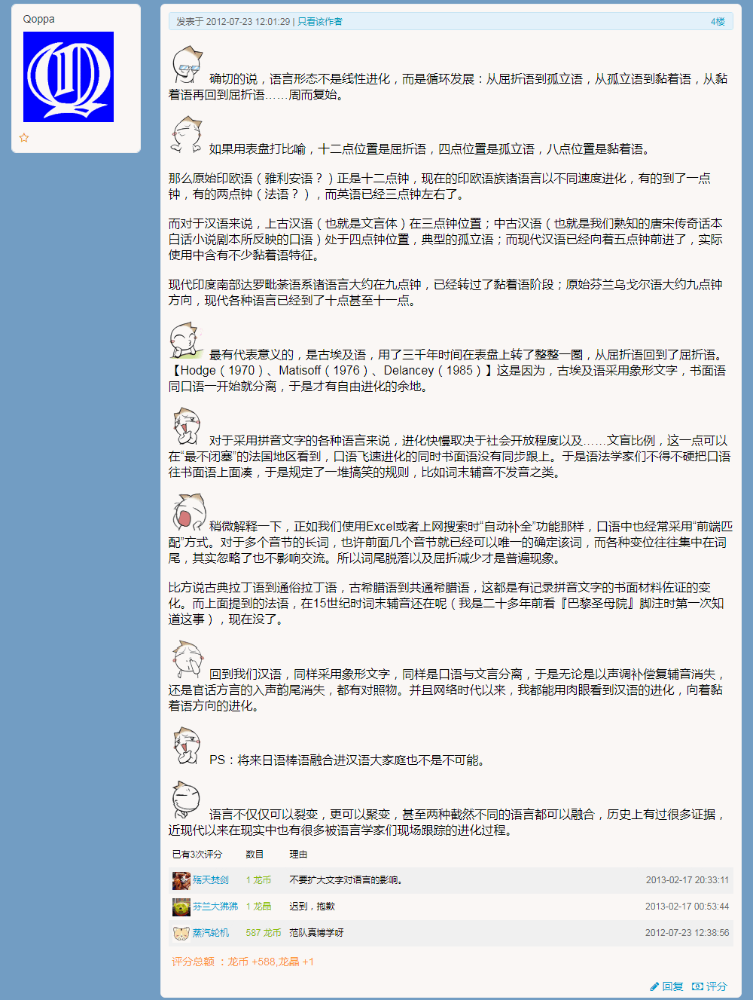
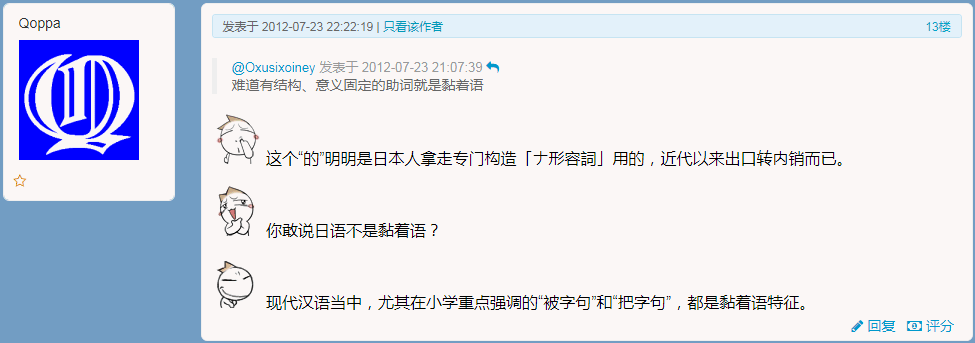
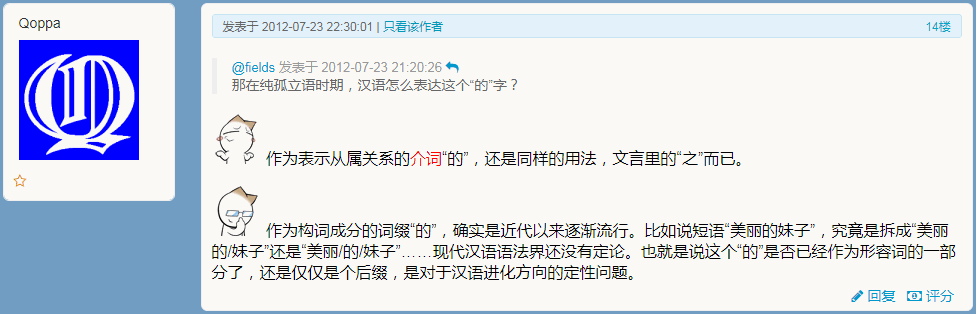
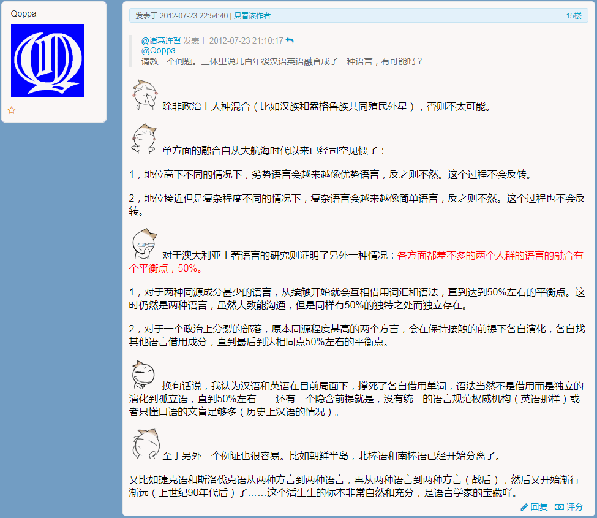
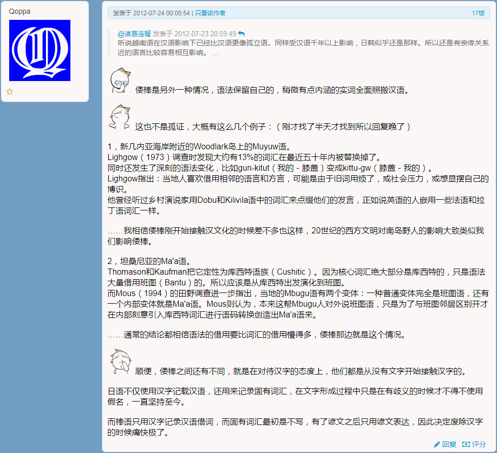

范狂夫
这么说吧，语言现象既不是普通使用者想像得那么简单，也不是语言学家们想像得那么深奥。语言是现实使用的交流手段，只要没有外力干涉（比如各种官方标准机构，包括但不限于法兰西学院、国家通用语言文字委员会），就会向着降低交流成本的方向演化。
就说日语，我从完全不懂的状态开始接触，曾经把～しています
当作英语-ing
那样使用，作为「现在进行时」的「屈折变化」而总结出一条「语法原则」。后来遇到了サ変
以外的「本土动词」，还当作「不规则动词」的「特例」，毕竟来自汉语的加上する
就能用的动词乍一看要多得多。直到有一天看见了「语法书」，才知道自己「错」得有多离谱。
但是，如果抬杠的话，我真的「错」了么？那么所有日本婴儿都错了，它们可不是通过正规途径按部就班的学习日语的哟。远在进学校知道「语法」这东西之前，就已经通过类似我的经历的方式，「熟练掌握」日语了也。
顺便把在其它站点几年前的关于语言方面的回复转贴过来，有点关系：
确切的说，语言形态不是线性进化，而是循环发展：从屈折语到孤立语，从孤立语到黏着语，从黏着语再回到屈折语……周而复始。
如果用表盘打比喻，十二点位置是屈折语，四点位置是孤立语，八点位置是黏着语。
那么原始印欧语（雅利安语？）正是十二点钟，现在的印欧语族诸语言以不同速度进化，有的到了一点钟，有的两点钟（法语？），而英语已经三点钟左右了。
而对于汉语来说，上古汉语（也就是文言体）在三点钟位置；中古汉语（也就是我们熟知的唐宋传奇话本白话小说剧本所反映的口语）处于四点钟位置，典型的孤立语；而现代汉语已经向着五点钟前进了，实际使用中含有不少黏着语特征。
现代印度南部达罗毗荼语系诸语言大约在九点钟，已经转过了黏着语阶段；原始芬兰乌戈尔语大约九点钟方向，现代各种语言已经到了十点甚至十一点。
最有代表意义的，是古埃及语，用了三千年时间在表盘上转了整整一圈，从屈折语回到了屈折语（Hodge, 1970; Matisoff, 1976; Delancey, 1985）这是因为，古埃及语采用象形文字，书面语同口语一开始就分离，于是才有自由进化的余地。
对于采用拼音文字的各种语言来说，进化快慢取决于社会开放程度以及……文盲比例，这一点可以在“最不闭塞”的法国地区看到，口语飞速进化的同时书面语没有同步跟上。于是语法学家们不得不硬把口语往书面语上面凑，于是规定了一堆搞笑的规则，比如词末辅音不发音之类。
稍微解释一下，正如我们使用Excel或者上网搜索时“自动补全”功能那样，口语中也经常采用“前端匹配”方式。对于多个音节的长词，也许前面几个音节就已经可以唯一的确定该词，而各种变位往往集中在词尾，其实忽略了也不影响交流。所以词尾脱落以及屈折减少才是普遍现象。
比方说古典拉丁语到通俗拉丁语，古希腊语到共通希腊语，这都是有记录拼音文字的书面材料佐证的变化。而上面提到的法语，在15世纪时词末辅音还在呢（我是二十多年前看《巴黎圣母院》脚注时第一次知道这事），现在没了。
回到我们汉语，同样采用象形文字，同样是口语与文言分离，于是无论是以声调补偿复辅音消失，还是官话方言的入声韵尾消失，都有对照物。并且网络时代以来，我都能用肉眼看到汉语的进化，向着黏着语方向的进化。
PS：将来日语棒语融合进汉语大家庭也不是不可能。
语言不仅仅可以裂变，更可以聚变，甚至两种截然不同的语言都可以融合，历史上有过很多证据，近现代以来在现实中也有很多被语言学家们现场跟踪的进化过程。
除非政治上人种混合（比如汉族和盎格鲁族共同殖民外星），否则不太可能。
单方面的融合自从大航海时代以来已经司空见惯了：
1，地位高下不同的情况下，劣势语言会越来越像优势语言，反之则不然。这个过程不会反转。
2，地位接近但是复杂程度不同的情况下，复杂语言会越来越像简单语言，反之则不然。这个过程也不会反转。
对于澳大利亚土著语言的研究则证明了另外一种情况：各方面都差不多的两个人群的语言的融合有个平衡点，50%。②
1，对于两种同源成分甚少的语言，从接触开始就会互相借用词汇和语法，直到达到50%左右的平衡点。这时仍然是两种语言，虽然大致能沟通，但是同样有50%的独特之处而独立存在。
2，对于一个政治上分裂的部落，原本同源程度甚高的两个方言，会在保持接触的前提下各自演化，各自找其他语言借用成分，直到最后到达相同点50%左右的平衡点。
换句话说，我认为汉语和英语在目前局面下，撑死了各自借用单词，语法当然不是借用而是独立的演化到孤立语，直到50%左右……还有一个隐含前提就是，没有统一的语言规范权威机构（英语那样）或者只懂口语的文盲足够多（历史上汉语的情况）。
至于另外一个例证也很容易。比如朝鲜半岛，北棒语和南棒语已经开始分离了。
又比如捷克语和斯洛伐克语从两种方言到两种语言，再从两种语言到两种方言（战后），然后又开始渐行渐远（上世纪90年代后）了……这个活生生的标本非常自然和充分，是语言学家的宝藏吖。
倭棒是另外一种情况，语法保留自己的，稍微有点内涵的实词全面照搬汉语。
这也不是孤证，大概有这么几个例子：（刚才找了半天才找到所以回复晚了）
1，新几内亚海岸附近的Woodlark岛上的Muyuw语。
Lighgow（1973）调查时发现大约有13%的词汇在最近五十年内被替换掉了。同时还发生了深刻的语法变化，比如gun-kitut
（我的－膝盖）变成kittu-gw
（膝盖－我的）。
Lighgow指出：当地人喜欢借用相邻的语言和方言，可能是由于旧词用烦了，或社会压力，或想显摆自己的博识。他曾经听过乡村演说家用Dobu和Kilivila语中的词汇来点缀他们的发言，正如说英语的人嵌用一些法语和拉丁语词汇一样。
……我相信倭棒刚开始接触汉文化的时候差不多也这样，20世纪的西方文明对南岛野人的影响大致类似我们影响倭棒。
2，坦桑尼亚的Ma’a语。
Thomason和Kaufman把它定性为库西特语族（Cushitic）。因为核心词汇绝大部分是库西特的，只是语法大量借用班图（Bantu）的。所以应该是从库西特出发演化到班图。
而Mous（1994）的田野调查进一步指出，当地的Mbugu语有两个变体：一种普通变体完全是班图语，还有一个内部变体就是Ma’a语。Mous则认为，本来这帮Mbugu人对外说班图语，只是为了与班图邻居区别开才在内部刻意引入库西特词汇进行语码转换创造出Ma’a语来。
……通常的结论都相信语法的借用要比词汇的借用慢得多，倭棒那边就是这个情况。
顺便，倭棒之间还有不同，就是在对待汉字的态度上，他们都是从没有文字开始接触汉字的。
日语不仅使用汉字记载汉语，还用来记录固有词汇，在文字形成过程中只是在有歧义的时候才不得不使用假名，一直坚持至今。
而棒语只用汉字记录汉语借词，而固有词汇最初是不写，有了谚文之后只用谚文表达，因此决定废除汉字的时候痛快极了。
大概就是这样。
备份发言截图：





补充说明几句。有些语言虽然有「经典文本」作为「标准语规范」，但是没有「执行机构」保证「大力推广普通话」，所以仍然保留了方言百花齐放百家争鸣的同时文白分离。
比方说阿拉伯语，都知道绿皮书是最高权威，但是民间方言照样千奇百怪，互相不能沟通的情况普遍存在。绿皮书所规定的「古典阿拉伯语」，只是「共识」，保持「凝聚力」的作用。
可以用汉语类比，「畴咨若时登庸」（“明儿①开会钦定哪个贵种接班啊”）是上古口语，注意书面写成六个字，口语中不定多少个音节呢，所以不会造成歧义。后来嘛，虽然没人这么说话了，但是汉族人之间在书面甚至口头交流当中使用这个「古古古典」短语，还是能互相明白的嘛，并且有修辞效果。
- ① 「明儿」：兲朝锤镰帮十八届七中全会于2017年10月11日召开，而本回答发表于当天凌晨两点。
- ② 补充素材：《英法双语无缝融合的最高境界》